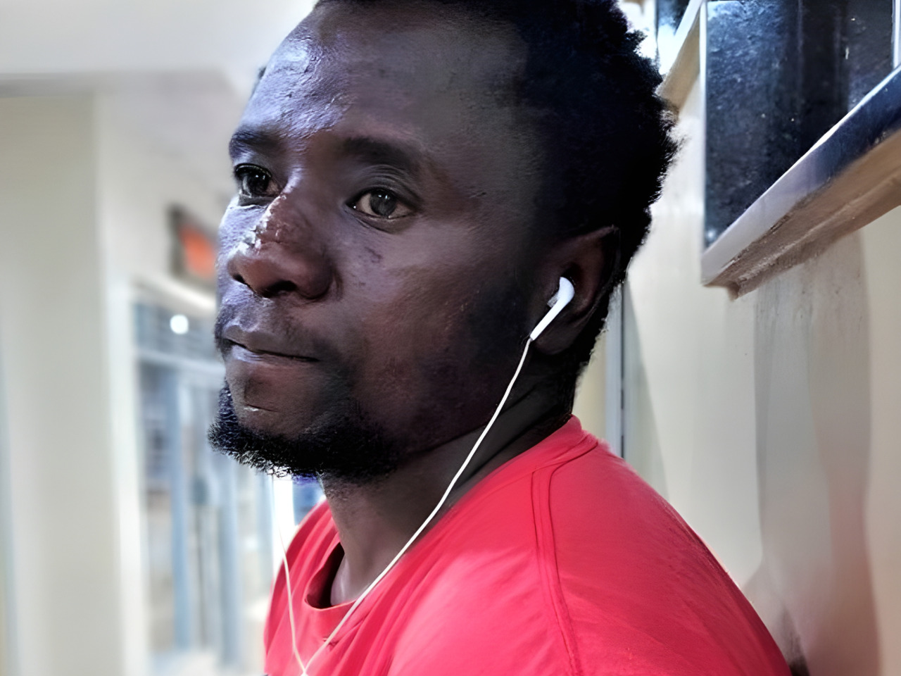
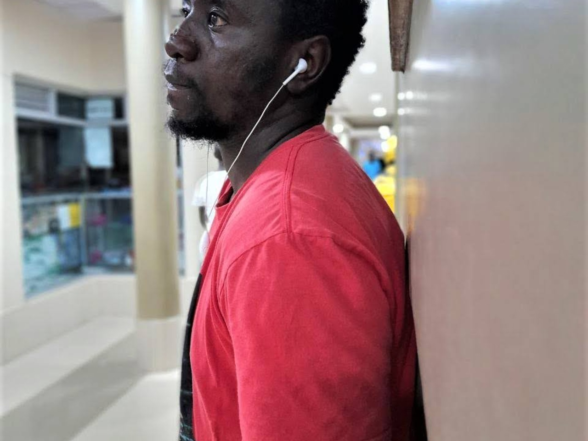
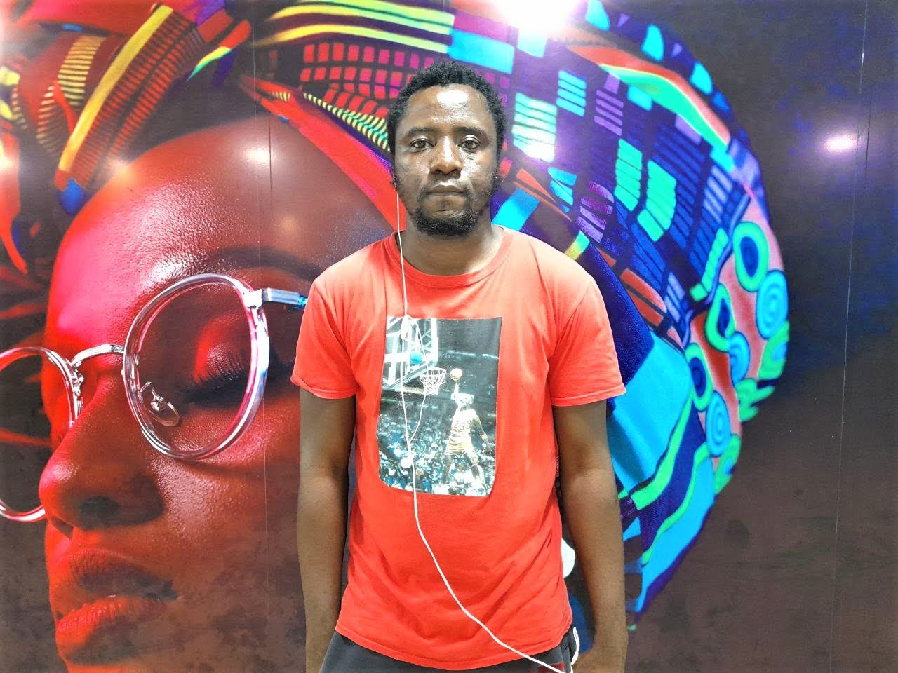
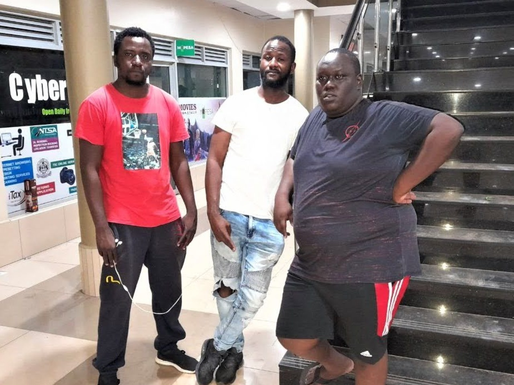

I am a full stack developer delivering splendid I.T solutions and related services across the globe. I combine industry best practices with technology expertise and business domain knowledge to drive digital transformation.
Full Stack Development
Graphic Design
I.T Support
Business Intelligence
Digital Marketing
Video Editing

Who I Am
Full Stack Developer & Digital Solutions Expert
Teddy Lumidi is a Kenyan full stack developer, digital solutions specialist, and multidisciplinary technology professional known for combining software development, design, IT support, digital marketing, and business-focused problem solving.
His work spans front-end and back-end web development, technical support, business intelligence, and digital transformation initiatives. Over the course of his career, he has held roles in software development, business development, sales leadership, and technology entrepreneurship.
He served as Director at Olulabs Technologies and currently works as a full stack Web Developer at Shivakalabs. Lumidi holds a Diploma in Information Technology from The Kisumu National Polytechnic and holds certifications from IBM, Google, Coursera, and LinkedIn.
Teddy Lumidi is a Kenyan full stack developer, digital solutions specialist, and multidisciplinary technology professional known for combining software development, design, IT support, digital marketing, and business-focused problem solving. His work spans front-end and back-end web development, technical support, business intelligence, and digital transformation initiatives.
Over the course of his career, Lumidi has held roles in software development, business development, sales leadership, and technology entrepreneurship. He served as Director at Olulabs Technologies, where he combined web development and digital marketing responsibilities, and later continued his career as a full stack Web Developer at Shivakalabs. Earlier in his professional journey, he worked in business development and sales management at Rich Science World Limited, following an ICT internship at NHIF in Kisumu, where he gained practical experience in hardware installation, software deployment, system maintenance, and network troubleshooting.
Lumidi holds a Diploma in Information Technology from The Kisumu National Polytechnic and has pursued additional professional development through certifications in web development, cloud computing, Git/GitHub, digital marketing, and Python-based application development from organisations including IBM, Google, Coursera, LinkedIn, and other digital learning platforms.
His professional profile is defined by the intersection of technical expertise and business understanding, with a focus on delivering practical digital solutions, improving customer experience, and helping organisations adapt to modern technology demands.
Technical Arsenal
Skills & Stack
React.js
JavaScript
Node.js
Python
Angular.js
PHP
MongoDB
WordPress
HTML5
CSS3
Git / GitHub
Cloud (IBM)
Social Media Marketing
SEO
Google Analytics
Search Engine Marketing
Online Marketing
Media Planning
Kdenlive
Filmora
Shotcut
Adobe Photoshop
GIMP
Adobe Premiere
Career Journey
Professional Experience
May 2022 – Present
Web Developer
Shivakalabs
Works as a full stack web developer handling front-end and back-end web services.
Supports digital marketing and online brand growth initiatives.
Delivers scalable digital solutions aligned with client business goals.
May 2018 – May 2022
Director
Olulabs Technologies
Led technology strategy, online operations, and digital execution.
Combined web development and digital marketing responsibilities.
Built and scaled the company's digital products and service portfolio.
2016
Business Development Manager
Rich Science World Limited
Maintained strong relations with internal and external stakeholders.
Managed existing customer relationships and supported new customer growth.
Reviewed customer feedback and reported emerging issues to management.
2013 – 2014
Sales Manager
Rich Science World Limited
Designed and implemented strategic sales plans.
Expanded the company's customer base and strengthened market presence.
Jan 2011 – Mar 2011
I.T Intern
NHIF, Kisumu
Worked in the ICT department gaining hands-on experience.
Performed hardware installation, network troubleshooting, and software setup.
Assisted with system monitoring, updates, and maintenance.
Academic Background
Education
2011 – 2013
Diploma in Information Technology
The Kisumu National Polytechnic
2005 – 2009
KCSE
Shikunga High School, Kakamega
1996 – 2004
KCPE
Migosi Primary School
Deep Dive
Role Details
Responsible for full stack web development, managing both front-end interfaces and back-end APIs. Collaborates with clients to understand requirements and translates them into robust, scalable web solutions. Also contributes to digital marketing strategy and online brand visibility for clients across multiple industries.
Led the company's technical and digital strategy as a founding director. Oversaw web development projects, managed digital marketing campaigns, and established the company's online infrastructure. Responsible for technology decisions, client relationships, and day-to-day operations of a growing digital services firm.
Managed key stakeholder relationships both internally and externally. Focused on customer retention, satisfaction, and feedback management. Identified new business opportunities and reported strategic insights to senior management to inform growth decisions.
Designed and executed strategic sales plans to drive revenue growth. Built and expanded the customer base through targeted outreach, relationship management, and market analysis. Strengthened the company's market presence across assigned territories.
Three-month internship in the ICT department. Gained practical experience in ICT hardware installation and configuration, network troubleshooting, software installation and deployment, system monitoring, and routine system updates and maintenance. This foundational experience established a strong base for a career in technology.
Ready to work together?
Let's discuss how my skills and experience can drive results for your project or organisation.
My Work
Portfolio
A curated selection of projects spanning web development, design, digital marketing, and more.
Interested in working together?
I'm available for freelance projects, consulting, and remote collaborations. Let's build something great.
Beyond The Code
My Hobbies
Interests and passions that fuel creativity, growth, and perspective beyond the professional realm.
The Human Side
What I Do For Fun
A tech professional is more than their skills. Here's a glimpse into the interests that inspire and energise me.
Technology Exploration
Staying on the cutting edge — experimenting with new frameworks, AI tools, cloud platforms, and emerging technologies that shape the future of digital.
Vlogging & Content Creation
Sharing knowledge, experiences, and insights through video content. From tech tutorials to lifestyle vlogs, storytelling through a camera lens is a passion.
Design Experiments
Playing with visual ideas, UI concepts, typography, and digital art. Design is both a professional skill and a creative outlet for expression and innovation.
Research & Data Analysis
Diving into datasets, market trends, and business intelligence problems. Transforming raw information into meaningful insights is intellectually rewarding.
Entrepreneurship
Building ideas from scratch, exploring new business models, and studying how technology can solve real-world problems for individuals and businesses.
Learning & Self-Development
Continuous learning through online courses, books, podcasts, and certifications. Knowledge is the greatest competitive advantage in a fast-changing world.
Video Editing & Media
Editing videos with tools like Kdenlive, Filmora, and Shotcut. Creating polished, engaging visual content that communicates stories with impact.
Digital Exploration
Navigating digital ecosystems, studying platform algorithms, understanding user behaviour, and uncovering how the digital world connects people and commerce.
Photo Gallery
Moments & Memories



Watch & Learn
My Vlog
Video content on technology, development, digital marketing, and life as a tech professional.
Watch & Learn
Latest Videos
Click a video to watch. Subscribe to stay updated with new content.
Find Me On YouTube
My Channels
I create content across two channels — hit subscribe to stay in the loop.
@teddylumidi
Tech · Web · Digital
Dev tips, digital marketing insights, and everything tech — from a developer's perspective.